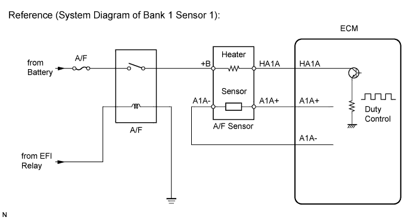
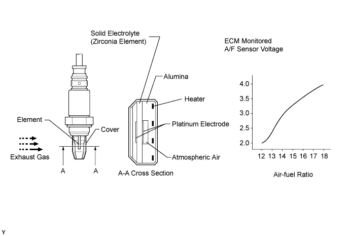
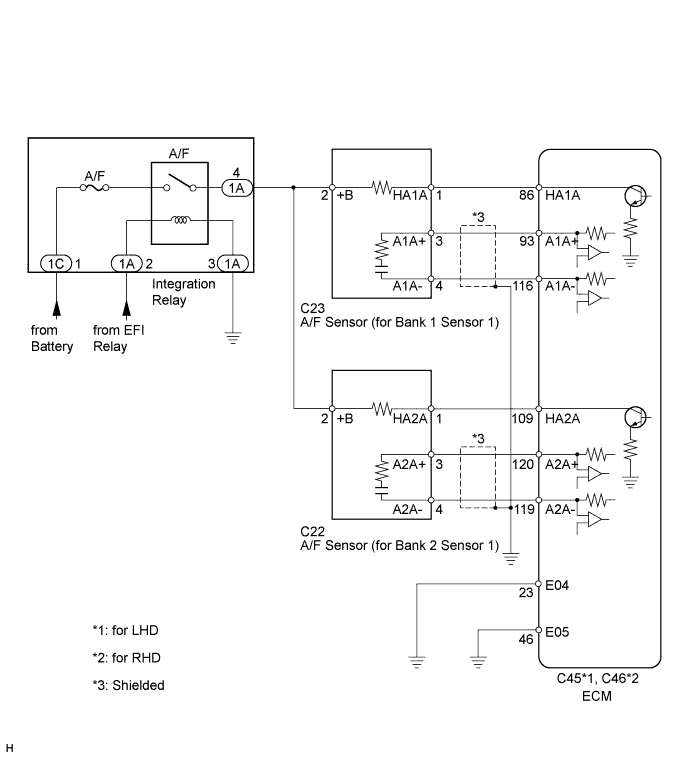
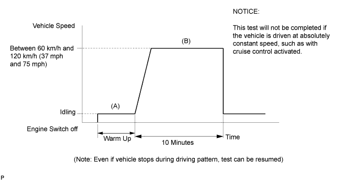
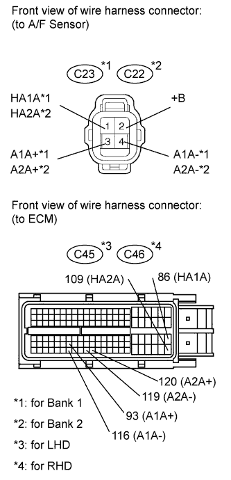

DTC P2237 Oxygen (A/F) Sensor Pumping Current Circuit / Open (Bank 1 Sensor 1) |
DTC P2238 Oxygen (A/F) Sensor Pumping Current Circuit Low (Bank 1 Sensor 1) |
DTC P2239 Oxygen (A/F) Sensor Pumping Current Circuit High (Bank 1 Sensor 1) |
DTC P2240 Oxygen (A/F) Sensor Pumping Current Circuit / Open (Bank 2 Sensor 1) |
DTC P2241 Oxygen (A/F) Sensor Pumping Current Circuit Low (Bank 2 Sensor 1) |
DTC P2242 Oxygen (A/F) Sensor Pumping Current Circuit High (Bank 2 Sensor 1) |
DTC P2252 Oxygen (A/F) Sensor Reference Ground Circuit Low (Bank 1 Sensor 1) |
DTC P2253 Oxygen (A/F) Sensor Reference Ground Circuit High (Bank 1 Sensor 1) |
DTC P2255 Oxygen (A/F) Sensor Reference Ground Circuit Low (Bank 2 Sensor 1) |
DTC P2256 Oxygen (A/F) Sensor Reference Ground Circuit High (Bank 2 Sensor 1) |


| DTC Code | DTC Detection Condition | Trouble Area |
| P2237 P2240 | An open in the circuit between terminals A1A+/A2A+ and A1A-/A2A- of the A/F sensor while the engine is running (2 trip detection logic). |
|
| P2238 P2241 | Any of the following conditions are met (2 trip detection logic):
|
|
| P2239 P2242 | The A1A+/A2A+ voltage is higher than 4.5 V (2 trip detection logic). |
|
| P2252 P2255 | The A1A-/A2A- voltage is 0.5 V or less (2 trip detection logic). |
|
| P2253 P2256 | The A1A-/A2A- voltage is higher than 4.5 V (2 trip detection logic). |
|


| Tester Display (Sensor) | Injection Volume | Status | Voltage |
| AFS B1 S1 or AFS B2 S1 (A/F) | +25% | Rich | Below 3.0 V |
| AFS B1 S1 or AFS B2 S1 (A/F) | -12.5% | Lean | Higher than 3.35 V |
| O2S B1 S2 or O2S B2 S2 (HO2) | +25% | Rich | Higher than 0.55 V |
| O2S B1 S2 or O2S B2 S2 (HO2) | -12.5% | Lean | Below 0.4 V |
| Case | A/F Sensor (Sensor 1) Output Voltage | HO2 Sensor (Sensor 2) Output Voltage | Main Suspected Trouble Area |
| 1 |   |  | - |
| 2 |  | |
|
| 3 | | |
|
| 4 | | |
|
| 1.CHECK HARNESS AND CONNECTOR (A/F SENSOR - ECM) |
 |
Disconnect the Air Fuel ratio (A/F) sensor connector.
Turn the engine switch on (IG).
Measure the voltage according to the value(s) in the table below.
| Tester Connection | Switch Condition | Specified Condition |
| C23-2 (+B) - Body ground | Engine switch on (IG) | 11 to 14 V |
| C22-2 (+B) - Body ground | Engine switch on (IG) | 11 to 14 V |
Turn the engine switch off.
Disconnect the ECM connector.
Measure the resistance according to the value(s) in the table below.
| Tester Connection | Condition | Specified Condition |
| C23-1 (HA1A) - C45-86 (HA1A) | Always | Below 1 Ω |
| C23-3 (A1A+) - C45-93 (A1A+) | Always | Below 1 Ω |
| C23-4 (A1A-) - C45-116 (A1A-) | Always | Below 1 Ω |
| C22-1 (HA2A) - C45-109 (HA2A) | Always | Below 1 Ω |
| C22-3 (A2A+) - C45-120 (A2A+) | Always | Below 1 Ω |
| C22-4 (A2A-) - C45-119 (A2A-) | Always | Below 1 Ω |
| Tester Connection | Condition | Specified Condition |
| C23-1 (HA1A) - C46-86 (HA1A) | Always | Below 1 Ω |
| C23-3 (A1A+) - C46-93 (A1A+) | Always | Below 1 Ω |
| C23-4 (A1A-) - C46-116 (A1A-) | Always | Below 1 Ω |
| C22-1 (HA2A) - C46-109 (HA2A) | Always | Below 1 Ω |
| C22-3 (A2A+) - C46-120 (A2A+) | Always | Below 1 Ω |
| C22-4 (A2A-) - C46-119 (A2A-) | Always | Below 1 Ω |
| Tester Connection | Condition | Specified Condition |
| C23-1 (HA1A) or C45-86 (HA1A) - Body ground | Always | 10 kΩ or higher |
| C23-3 (A1A+) or C45-93 (A1A+) - Body ground | Always | 10 kΩ or higher |
| C23-4 (A1A-) or C45-116 (A1A-) - Body ground | Always | 10 kΩ or higher |
| C22-1 (HA2A) or C45-109 (HA2A) - Body ground | Always | 10 kΩ or higher |
| C22-3 (A2A+) or C45-120 (A2A+) - Body ground | Always | 10 kΩ or higher |
| C22-4 (A2A-) or C45-119 (A2A-) - Body ground | Always | 10 kΩ or higher |
| Tester Connection | Condition | Specified Condition |
| C23-1 (HA1A) or C46-86 (HA1A) - Body ground | Always | 10 kΩ or higher |
| C23-3 (A1A+) or C46-93 (A1A+) - Body ground | Always | 10 kΩ or higher |
| C23-4 (A1A-) or C46-116 (A1A-) - Body ground | Always | 10 kΩ or higher |
| C22-1 (HA2A) or C46-109 (HA2A) - Body ground | Always | 10 kΩ or higher |
| C22-3 (A2A+) or C46-120 (A2A+) - Body ground | Always | 10 kΩ or higher |
| C22-4 (A2A-) or C46-119 (A2A-) - Body ground | Always | 10 kΩ or higher |
|
| ||||
| OK | |
| 2.REPLACE AIR FUEL RATIO SENSOR |
Replace the air fuel ratio sensor (Click here).
| NEXT | |
| 3.PERFORM CONFIRMATION DRIVING PATTERN |
| NEXT | |
| 4.CHECK WHETHER DTC OUTPUT RECURS |
Connect the intelligent tester to the DLC3.
Turn the engine switch on (IG) and turn the tester on.
Clear the DTCs (Click here).
Start the engine.
Allow the engine to idle for 5 minutes or more.
Enter the following menus: Powertrain / Engine and ECT / DTC / Pending.
Read the pending DTCs.
| Result | Proceed to |
| No output | A |
| P2237, P2240, P2238, P2241, P2239, P2242, P2252, P2255, P2253 or P2256 output | B |
|
| ||||
| A | ||
| ||